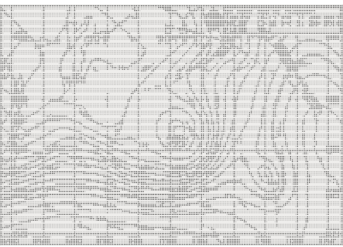

나는 쓴다∙∙∙∙∙∙
나는 쓴다: 나는 쓴다∙∙∙∙∙∙
나는 쓴다: “나는 쓴다∙∙∙∙∙∙”
나는 내가 쓴다고 쓴다∙∙∙∙∙∙
등등,
나는 쓴다. 나는 페이지에 단어들을 적는다.
글자가 하나씩 더해지면서, 텍스트가 만들어지고, 명확해지고,
확고해지며, 고정되고, 굳어진다.
행 하나가 꽤 정확하게 수
평
적
으
로
흰 종이에
놓이고, 순결한 공간을 검게 물들이며, 그곳에 하나의 의미를 부여하고,
그곳을 매개 공간으로 만든다.
왼쪽에서 오른쪽으로
위
에
서
아
래
로
이전에는, 아무것도 또는 거의 아무것도 없었다.
이후에는, 대단한 것은 없지만 몇몇 기호가 있다.
이 기호들만으로도 위와 아래가 생기고, 시작과 끝,
오른쪽과 왼쪽, 앞면과 뒷면이 생긴다.
나는 쓴다. 나는 내 종잇장에서 살고 있고,
그것에 정성을 쏟으며, 그 종잇장 속을 돌아다닌다.
나는 공백들, 간격들(의미상의 튀어오름들: 불연속성, 변화, 전이)을
생기게 한다.
나는
가장자리에
쓴다∙∙∙∙∙∙
공간은 이렇게 오직 단어들,
흰 종이에 적힌 기호들과 함께 시작된다.

공간을 묘사하기:
공간을 명명하기, 공간을 글로써 그리기, 해도 제작자들처럼 해안을 항구의 이름들로, 곶의 이름들로, 작은 만의 이름들로 채워넣어, 마침내 육지외 바닥 오로지 연속되는 하나의 텍스트 띠로만 분리되게 만들기, 알레프, 전 세계가 동시에 보이는 이 보르헤스의 장소는 바로
알파벳이지 않을까?